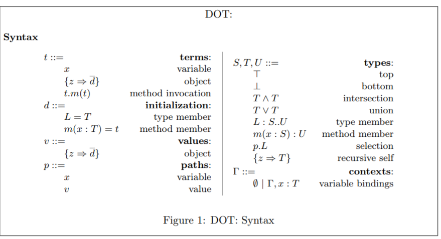
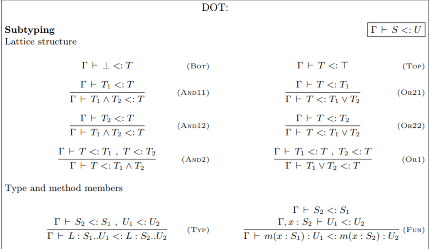
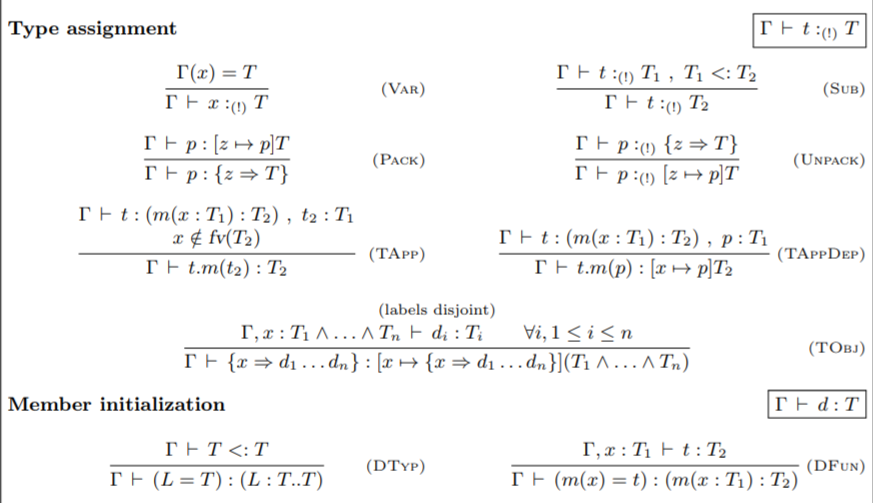
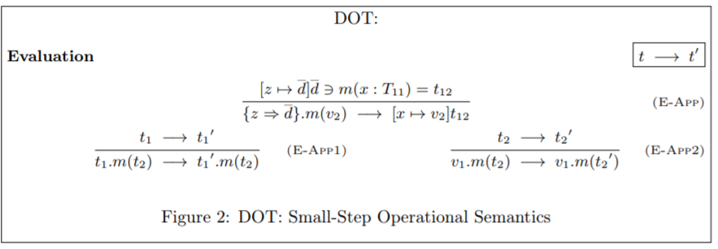

<!doctype html>
<html lang="ja">

	<head>
		<meta charset="utf-8">

    <title>Gentle Introduction to DOT calculus</title>

		<meta name="description" content="Gentle Introduction to DOT calculus">
		<meta name="author" content="Kota Mizushima">

		<meta name="apple-mobile-web-app-capable" content="yes">
		<meta name="apple-mobile-web-app-status-bar-style" content="black-translucent">

		<meta name="viewport" content="width=device-width, initial-scale=1.0, maximum-scale=1.0, user-scalable=no, minimal-ui">

		<link rel="stylesheet" href="css/reveal.css">
		<link rel="stylesheet" href="css/theme/black.css" id="theme">
<style type='text/css'>     
  .reveal h1,               
  .reveal h2,               
  .reveal h3,               
  .reveal h4,               
  .reveal h5,               
  .reveal h6 {              
    text-transform: none;   
  }                         
</style>                    

		<!-- Code syntax highlighting -->
		<link rel="stylesheet" href="lib/css/zenburn.css">

		<!-- Printing and PDF exports -->
		<script>
			var link = document.createElement( 'link' );
			link.rel = 'stylesheet';
			link.type = 'text/css';
			link.href = window.location.search.match( /print-pdf/gi ) ? 'css/print/pdf.css' : 'css/print/paper.css';
			document.getElementsByTagName( 'head' )[0].appendChild( link );
		</script>

		<!--[if lt IE 9]>
		<script src="lib/js/html5shiv.js"></script>
		<![endif]-->
	</head>

	<body>

		<div class="reveal">

			<!-- Any section element inside of this container is displayed as a slide -->
<div class='slides'>
<section data-markdown data-separator='^\n---$'><script type='text/template'>

## Gentle Introduction to DOT calculus
## ScalaMatsuri 2019
## Kota Mizushima (DWANGO Co.,Ltd.)

---

### Who am I?
- Twitter ID: [@kmizu](https://twitter.com/kmizu)
- GitHub: [kmizu](https://github.com/kmizu)
- Love: Scala/Rust/Nemerle/...
- Parsing algorithm enthuasiast

***

Scalaと構文解析アルゴリズムが大好きなプログラマです

---

### Purpose

- Introduce the notaion of **core calculus**
  - abstract syntax, typing rule, operational semantics
- Introduce DOT calculus informally
- Show properties of DOT

***

- 核計算の概念、DOT計算の紹介などが目的です

---

### Scala

- Designed by Martin Odersky in 2003
  - A FP researcher
- SCAlable LAnguage
- Latest: Scala 2.13.0
- Many industrial usages

***

- Martin Oderskyによって2003年に開発されました
- 多くの実用例があります

---

### Dotty
  
- https://dotty.epfl.ch/
- Dotty will be Scala 3.0
- Many improvements
- Dotty is based on DOT calculus

***

- DottyはScala 3.0になる予定です
- DOT計算をベースにした言語です

---

### DOT Calculus

- Core calculus of Scala 3.0
- DOT is abbreviation of *D*ependent *O*bject *T*ypes
- Core calculus:
  - Essense of a programming language
    - Abstract Syntax, Typing Rules, Semantics
  - Used to prove the behavior of the language
 
***

- DOT計算はScala 3.0の核言語です
- 核言語とはプログラミング言語の本質です

---

### Why Core Calculus?

- Too difficult to model real programming languages
- Need good **subset** of programming languages

***

- 現実のプログラミング言語をモデル化することは難しすぎます
- 良いサブセットが必要です

---

### History of Core Calculus in Scala

- vObj calculus (2003)
- Featherweight Scala (2006)
- DOT calculus (2012-)

***

- vObj calculus（2003年）
- Featherweight Scala（2006年）

---

### Note

- DOT has several versions
  - since several DOT papers exists
- This presentation is based on
  - [Nada Amin's dot repository](https://github.com/namin/dot)
  - the paper of DOT appeared in OOPSLA'16 
- Other papers may explain DOT in different manner

***

- Nada AminさんのリポジトリとOOPSLA'16の論文をベースにします
- 他の論文では違う形で説明されているかもしれません

---

### What is Needed for Core Calculus ?

- Abstract Syntax
  - drop concrete syntax
- Typing rule
  - if the language has type system
- (Operational) semantics
  - like a naive implementation of an interpreter

***

- 抽象構文、型付け規則、（操作的）意味論が必要です
- 操作的意味論は、ナイーヴなインタプリタ実装のようなものです

---

### Abstract Syntax

- Concrete syntax has extra information
  - spaces, tabs, commas, parenthesis, etc.
- An example of pseudo EBNF:
  - very simple calculation

```
E ::= P ("+" S P)*
P ::= "(" S E ")" S | I S
I ::= "0" | "1"
S ::= ("\t" | " " | "\r" | "\n)*
```

- 具象構文は余計な情報を含んでいます

---

### Abstract Syntax

- Drop such extra information from concrete syntax
- Important to define *value*
  - *value* is a term which cannot be evaluated
- An example of abstract syntax in EBNF-like notation
  - very simple calculation
  - `V` is value

```
E ::= E + E | V
V ::= 0 | 1  // value
```

- 抽象構文は具象構文から余計な情報を除いたものです
- *値*を定義するのが重要です 

---

### Abstract Syntax - Intuition

```scala
sealed trait E
sealed trait V extends E
case object Zero extends V
case object One extends V
case class Plus(t1: E, t2: E) extends E
```

---

### Typing Rules

- Rules for typing terms
- Γ(gamma) is called as **typing environments**
  - mappings from variable to type
- ⊢ is called as **typing judgements**
- An example:
  - very simple calculation


```
-----------------------------
Γ⊢ 0 : Int  Γ⊢ 1 : Int ...

Γ⊢ t1 : Int Γ⊢ t2 : Int
----------------------------
Γ⊢ t1 + t2 : Int
```

***

- Γは**型環境**と呼ばれます
- ⊢は**型判断**と呼ばれます

---

### Typing Rule - Intuition

```scala
def ⊢(t, Γ) = t match {
  case Zero => Int
  case 1 => Int
  case (t1 `+` t2`) =>
    (⊢(t1, Γ), ⊢(t2, Γ)) match {
      case  (Int, Int) => Int
      case _ => TypeError
    }
}
```

---

### Operational Semantics

- Rules for evaluating terms
- It can be seen as a naive interpreter

```
t1 → `t1`  t2 → `t2`
-------------------------
t1 `+` t2 → `t1` + `t2`
```

***

- ナイーヴなインタプリタのようなものと見ることができます

---

### Operational Semantics - Intuition

```scala
def →(t) = t match {
  case (t: V) => t
  case (t1 `+` t2) =>
    val (`t1`, `t2`) =  (→(t1), →(t2)) 
    `t1` + `t2`
}
```

---

# DOT: *D*ependent *O*bject *T*ypes

---

### Characteristics of DOT's Type System


- Union and intersection types
  - `e: Int | String`, `e: Number & Serializable`
- Type members
  - `e: Any { type M }`
- Path-dependent types
  - `e: v.x` (`v` is constant)
- Combination of subtyping and these types

***

- 交差型（union type）、合併型（intersection type）など
- それらとサブタイピングが組み合わさっています

---

### Syntax of DOT

- Citation from https://github.com/namin/dot



---

### Subtyping in DOT (1)

- Citation from https://github.com/namin/dot




---

### Subtyping in DOT (2)

- Citation from https://github.com/namin/dot


---

## Typing Rules of DOT

- Citation from https://github.com/namin/dot



---

### Oerational Semantics of DOT

- Citation from https://github.com/namin/dot



---

### Properties of DOT

- DOT type system is sound
  - soundness is very important property
    - typed terms don't do undefined behavior
  - a mechanized proof in Coq exists:
    - https://github.com/namin/dot
- Typing in DOT is undecidable
  - typing algorithm may not terminate
  - DOT can encode  `F<:`, typing is also undecidable
  - typing in many programming languages is undecidable
    - Scala, Java, C++, TypeScript, etc.

***

- DOTの型システムは健全です
- DOTの型付けは決定不能です

---

### Conclusion

- Core calculus is essence of programming languages
- DOT is core calculus of Scala 3
- Type system of DOT is sound
- Typing in DOT is undecidable (!)

</script></section>

      </div>
		</div>
    

		<script src="lib/js/head.min.js"></script>
		<script src="js/reveal.js"></script>

		<script>

			// Full list of configuration options available at:
			// https://github.com/hakimel/reveal.js#configuration
			Reveal.initialize({
				controls: true,
				progress: true,
				history: true,
				center: true,

				transition: 'slide', // none/fade/slide/convex/concave/zoom

				// Optional reveal.js plugins
				dependencies: [
					{ src: 'lib/js/classList.js', condition: function() { return !document.body.classList; } },
					{ src: 'plugin/markdown/marked.js', condition: function() { return !!document.querySelector( '[data-markdown]' ); } },
					{ src: 'plugin/markdown/markdown.js', condition: function() { return !!document.querySelector( '[data-markdown]' ); } },
					{ src: 'plugin/highlight/highlight.js', async: true, callback: function() { hljs.initHighlightingOnLoad(); } },
					{ src: 'plugin/zoom-js/zoom.js', async: true },
					{ src: 'plugin/notes/notes.js', async: true }
				]
			});

		</script>

	</body>
</html>
